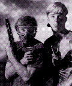
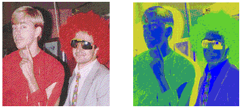
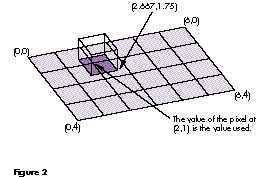
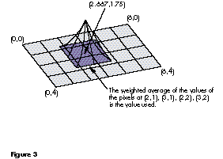
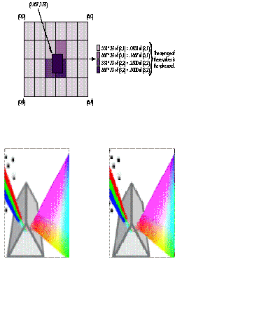
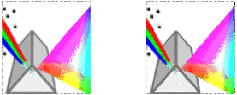
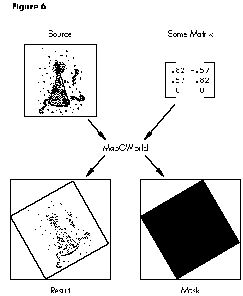
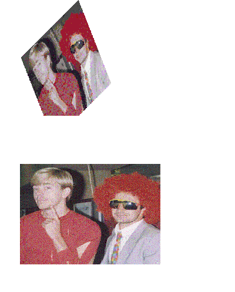
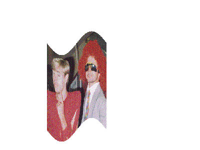
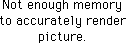

32-Bit QuickDraw brought system support for off-screen drawing worlds to the
Macintosh, and Color QuickDraw continues this support in System 7. Using custom
drawing routines in off-screen worlds can increase a program's speed and image-
processing versatility. This article describes custom drawing routines that do just
that.
It's a basic rule of Macintosh programming never to write a drawing routine that
draws directly to the screen. There are two good reasons for this rule. First, multiple
clients share the screen, and custom routines that draw directly to the screen may
violate cooperation rules (new ones are being invented all the time). Second, support
for new types of displays may be added to QuickDraw (as was the case with 32-Bit
QuickDraw), and custom routines that draw directly to the screen certainly won't
work when new display types are introduced.
So if your application has a drawing need that QuickDraw cannot fulfill, off-screen
drawing is the only way to go. Your application draws to an off-screen copy of the
application window, and the off- screen image is transferred to the screen with
QuickDraw's CopyBits procedure. In the off-screen environment your application is
the sole proprietor, and support for new displays will not affect how the off-screen
environment behaves. In addition, using CopyBits to transfer an off-screen image onto
the screen enables fast and smooth updating.
There are a couple of different ways to create an off-screen drawing environment. The
old-fashioned way is to create it by hand, an arduous task that results in all the
structures being kept in main memory. The new, improved way is to create it with the
NewGWorld call first made available by 32- Bit QuickDraw and now supported by
Color QuickDraw in System 7. When this method is used, a copy of the GWorld can be
cached on an accelerator card, thus enabling improved performance by minimizing
NuBusTM traffic during drawing operations. (For a full comparison of drawing
operations with and without the use of GWorlds, see "Macintosh Display Card 8*24GC"
indevelop Issue 3.)
Given that you must certainly see the wisdom of using GWorlds in applications, we'll
now move on to the good stuff--how to increase performance and create some
interesting special effects with custom drawing routines. You should know the basics of
creating and disposing of GWorlds to get the most from this article. If you need a
review of these basics, read "Braving Offscreen Worlds" indevelop Issue 1 or see
Chapter 21 ofInside Macintosh Volume VI.
Sometimes QuickDraw works too slowly for some of us. Whereas QuickDraw often
trades performance for flexibility, there are times we'd just as soon trade flexibility
for performance. In those cases, we can achieve tremendous gains in speed by writing
custom routines to draw to off-screen worlds. Before writing such a routine, though,
we need to understand what slows QuickDraw down.
WHY IS QUICKDRAW OFTEN SO SLOW?
Let's examine EraseRect to help us understand the considerable overhead QuickDraw
has to deal with just to perform a simple operation. An EraseRect call is issued via a
trap, so right off the bat we incur the overhead of the trap dispatcher. For a complex
operation, this overhead is relatively small, but for a simple operation performed
repetitively, this overhead can be significant. In the latter case, the trap dispatcher
overhead can be avoided by calling GetTrapAddress and then calling the routine
directly. (Note that with high-level routines, some traps take a selector.)
After we've called the routine, QuickDraw must do the following setup:
Then the drawing takes place, consisting of these steps:
The teardown consists of two steps:
Notice that this list doesn't include error checking. QuickDraw does do some error
checking, but rigorous checking slows performance further. While many of the items
on this list are a simple check, others require considerable processor time. There's
plenty of room here for reducing overhead by writing custom routines.
Custom routines can often skip all but step 10. For drawing operations that spend the
majority of time in step 10, custom routines can't offer big wins in performance. But
for operations that spend most of the time elsewhere, custom routines can achieve
significant performance gains.
For example, if you copy a large image with CopyBits and the source and destination
pixel depths are the same, the fgColor is black and the bkColor is white, the color
tables match, the clipping regions are rectangular, and the alignment is the same, the
operation is already very efficient since the majority of time is spent moving the bits
rather than doing overhead. In this situation, you can't hope to gain substantial speed
with a custom drawing routine. In contrast, for an operation such as setting a single
pixel, the overhead involved in setting up the drawing operation eclipses the time
actually spent drawing, so this is a candidate for a custom drawing routine.
OPTIMIZING A CUSTOM ROUTINE TO SET A SINGLE PIXEL
The simplest drawing to an off-screen world is setting a single pixel. Let's compare
how QuickDraw sets a single pixel with how a custom drawing routine might do it. For
our custom routine, we'll assume the off-screen world is 32 bits deep. This
assumption gives us significant gains in speed and reduces code size and complexity.
Our sample code inverts the red and green channels. Figure 1 illustrates the
transformation this accomplishes. Using QuickDraw, the code looks like this:
for (y = bounds.top; y < bounds.bottom; y++)
{
for (x = bounds.left; x < bounds.right; x++)
{
GetCPixel(x, y, &myRGB);
myRGB.red ^= 0xFFFF; /* Invert the red and green channels. */
myRGB.green ^= 0xFFFF;
SetCPixel(x, y, &myRGB);
}
}

Figure 1 A Couple of Crazy Guys, Before and After Red/Green Inversion
As shown here, we use the QuickDraw routines GetCPixel and SetCPixel to get and set
the color of a single pixel. SetCPixel is converted to a line-drawing command, because
setting a single pixel is actually a special case of drawing a line (avery short line!).
This way of implementing pixel setting is advantageous because line-drawing
operations are saved in pictures and use the pattern and transfer mode from the port.
It also simplifies QuickDraw on the bottleneck level since no separate bottleneck
routine exists for setting pixels. The downside is that setting a single pixel this way is
slow. To produce the transformation shown in Figure 1, the code takes 624 ticks or
about 10.4 seconds to run on a Macintosh IIfx.
Faster. Now let's develop a custom routine that optimizes setting a single pixel. For
a first pass, we'll eliminate the majority of the overhead and set the pixel directly
rather than do line drawing. Given a GWorldPtr, an x and y position, and a 32-bit
value, our routine GWSet32PixelC sets the pixel at that position to that value. The
parallel call GWGet32PixelC is identical, except that where GWSet32PixelC sets the
value, GWGet32PixelC returns it.
GWSet32PixelC(GWorldPtr src, short x, short y, long pixelValue)
{
PixMapHandle srcPixMap;
unsigned short srcRowBytes;
long srcBaseAddr;
long srcAddr;
char mmuMode;
srcPixMap = GetGWorldPixMap(src);
/* Get the address of the pixels. */
srcBaseAddr = (long) GetPixBaseAddr(srcPixMap);
/* Get the row increment. */
srcRowBytes = (**srcPixMap).rowBytes & 0x7fff;
/* Make coordinates pixel map relative. */
x -= (**srcPixMap).bounds.left;
y -= (**srcPixMap).bounds.top;
mmuMode = true32b;
SwapMMUMode(&mmuMode); /* Set the MMU to 32-bit mode. */
/* Calculate the address of the pixel: base + y*(row size in
bytes) + x*(bytes/pixel). */
srcAddr = srcBaseAddr + (long)y*srcRowBytes + (x << 2);
*((long *)srcAddr) = pixelValue;
SwapMMUMode(&mmuMode); /* Restore the previous MMU mode. */
}
Of interest in this code is the call to SwapMMUMode before drawing to the GWorld. This
is necessary since the GWorld could be cached on an accelerator card and require
32-bit addressing to access it. (See "QuickDraw's CopyBits Procedure" indevelop
Issue 6 for a complete explanation.)
If we revise our sample code to use our new calls GWGet32PixelC and GWSet32PixelC,
the image shown in Figure 1 takes 398 ticks (or 6.8 seconds) to process. This is about
65% faster than QuickDraw, but is still much slower than it needs to be.
And faster. There are two major inefficiencies in our sample code: it makes four
trap calls and it's at the mercy of the C compiler. Both of these problems are easily
overcome, as the FastGWSet32Pixel routine demonstrates. Rather than take a
GWorldPtr, FastGWSet32Pixel takes a pixMap pointer and a base address.
Furthermore, the routine assumes it's being called in 32-bit mode. Note that the
variablesbounds, top, rowBytes, and left are defined in QuickEquate.a.
FastGWSet32Pixel(PixMap *srcPixMap, long *srcBaseAddr, short x,
short y, long pixelValue)
{
FastGWSet32Pixel(PixMap *srcPixMap, long *srcBaseAddr, short x,
short y, long pixelValue)
{
asm {
move.l srcPixMap,a0 ;Must be 32-bit-clean pointer
move.w y,d1 ;Get y
sub.w bounds+top(a0),d1 ;Make y bounds 0 relative
move.w rowBytes(a0),d0 ;Get rowBytes
and.w #0x7FFF,d0 ;Strip bitmap/pixMap bit
mulu.w d0,d1 ;Calculate offset to start of this row
move.l srcBaseAddr,a1 ;Must be 32-bit base address
adda.l d1,a1 ;Calculate address of this row
moveq #0,d0 ;Extend x to a word
move.w x,d0
sub.w bounds+left(a0),d0 ;Make x bounds 0 relative
lsl.w #2,d0 ;Convert x to pixels (4 bytes/pixel)
adda.l d0,a1 ;Calculate pixel address
move.l pixelValue,(a1)
}
}
You may wonder why this routine takes both a pixMap and a base address. Can't it just
get the base address from the pixMap directly? The answer is no, since the base
address of a GWorld can be a handle rather than a pointer and in the future might be
something different again. You must pass in abase address that's good in 32-bit
addressing mode. The GetPixBaseAddr routine called by GWSet32PixelC returns the
correct base address given a pixMap.
Revising our sample code isn't as trivial as it was before because of the additional
assumptions made by these fast get and set pixel routines. Here's the new version of
the code:
/* Get pixMap's 32-bit base address. */
srcBaseAddr = (long *) GetPixBaseAddr(myPixMapHandle);
myPixMapPtr = *myPixMapHandle;
/* WARNING: The pixMapHandle is dereferenced throughout these next
loops. The code makes sure memory will not move. In particular,
it's important that the segment containing the FastGWGet32Pixel
and FastGWSet32Pixel routines is already loaded or is in the same
segment as the caller. Otherwise memory might move when the
segment is loaded. A trick to make sure the segment is loaded is
to call a routine in the same segment (or these routines
themselves) before making assumptions about memory not moving. */
/* Make it 32-bit clean. */
LockPixels(myPixMapHandle);
myPixMapPtr = (PixMap *) StripAddress((Ptr)myPixMapPtr);
mmuMode = true32b;
SwapMMUMode(&mmuMode); /* Set the MMU to 32-bit mode. */
for (y = bounds.top; y < bounds.bottom; y++)
{
for (x = bounds.left; x < bounds.right; x++)
{
myPixel = FastGWGet32Pixel(myPixMapPtr, srcBaseAddr, x, y);
myPixel ^= 0x00FFFF00;
/* Invert the red and green channels. */
FastGWSet32Pixel(myPixMapPtr, srcBaseAddr, x, y, myPixel);
}
}
SwapMMUMode(&mmuMode); /* Set it back. */
UnlockPixels(myPixMapHandle);
Note that the code calls StripAddress on the pixMapPtr since it'll be used in 32-bit
mode. Also note that although we locked the pixels, we didn't lock the pixMapHandle, so
no operation that could move memory is performed. You must be careful that the get
and set pixel routines are in the same segment as the code that's calling them, or the
Segment Loader might move memory when the routines are called. If all these
restrictions are too much to keep in mind, simply call HLock on the pixMapHandle, and
then HUnlock when you've finished.
Our sample image now takes only 17 ticks to process, or about .3 second. This is a
nearly 37-fold improvement over the first version. But we're not done yet.
And even faster. We're still performing two subroutine calls and two multiplies
per pixel, a major inefficiency. The RedGreenInvert routine gets rid of this
inefficiency by walking a GWorld's pixMap to invert the red and green channels.
RedGreenInvert(GWorldPtr src)
{
PixMapHandle srcPixMap;
short srcRowBytes;
long *srcBaseAddr;
long *srcAddr1;
char mmuMode;
short row, column;
short width, height;
srcPixMap = GetGWorldPixMap(src);
if(LockPixels(srcPixMap))
{
/* Get the base address. */
srcBaseAddr = (long *) GetPixBaseAddr(srcPixMap);
/* Get the row increment. */
srcRowBytes = (**srcPixMap).rowBytes & 0x7fff;
width = (**srcPixMap).bounds.right-(**srcPixMap).bounds.left;
height =
(**srcPixMap).bounds.bottom-(**srcPixMap).bounds.top;
mmuMode = true32b;
SwapMMUMode(&mmuMode); /* Set the MMU to 32-bit mode. */
for (row = 0; row < height; row++)
{
srcAddr1 = srcBaseAddr;
for (column = 0; column < width; column++)
{
/* Invert the red and green. Note that for 32-bit
pixels, pixel memory is organized as XRGB, where
each component is 8 bits. */
*srcAddr1++ ^= 0x00ffff00; /* Bump to next pixel. */
}
/* Go to the next row. */
srcBaseAddr =
(long *) ((char *) srcBaseAddr + srcRowBytes);
}
SwapMMUMode(&mmuMode); /* Restore the previous MMU mode. */
UnlockPixels(srcPixMap); /* Unlock the pixMap. */
}
}
Using the RedGreenInvert routine, our sample image now takes 1 tick or 1/60th of a
second to process. This is nearly 624 times faster than the original version! Even
greater performance gains can be made by rewriting this routine in assembly, but
that's left as an exercise for you.
The price you pay. Note that as performance increases, the flexibility of the code
decreases. In our example, the original version of the code, which calls GetCPixel and
SetCPixel, works for all pixel depths, is recorded into pictures, and does the actual
drawing using QuickDraw. GWSet32PixelC works only on 32-bit off-screen pixMaps.
FastGWSet32Pixel has the additional restriction that it has to be called in 32-bit
addressing mode. And finally, RedGreenInvert performs only one specific operation on
an entire 32-bit GWorld.
We've shown you the tremendous speed improvements you can achieve by writing
custom drawing routines. Now we turn our attention to some useful code examples for
manipulating images.
Some image transformations lend themselves to direct manipulation of GWorld data.
For example, with custom drawing routines we can transform images off-screen in
various ways, find the edges of an image, quickly scale an image for use as a mask, and
fill a rectangle in real time. We present these custom routines here and on
theDeveloper CD Series disc.
A CUSTOM ROUTINE TO TRANSFORM IMAGES
We can obtain a variety of special effects--including rotation, stretching, perspective
transformation, and sine wave warping--by applying a mapping matrix to a source
GWorld, resulting in atransformed destination GWorld. This technique requires us to
access an image at fractional rather than integer pixel coordinates--that is, to do
subpixel sampling rather than point sampling. Let's consider subpixel sampling first
and then look at the mapping routine.
Subpixel sampling. In QuickDraw, pixels are defined only for integer coordinates
and undefined elsewhere. The location of each pixel is defined by the pair of integer
coordinates at its upper left corner. To determine the value a pixel has at a fractional
location in the pixMap, we must use a filter function. The routine we provide to do
subpixel sampling, called GetFractionalPixel, can use either of two types of filters: a
box filter or a tent filter. If use_box_filter is defined in the GetFractionalPixel
routine, a box filter is used; otherwise a tent filter is used.
Here's how the filters work. Suppose the grid with corners at (0,0) and (6,4)
represents part of an image, which we want to sample at fractional position
(2.667,1.75). We can visualize each filter as a geometric solid whose base covers the
pixel(s) on the grid to be sampled and whose height represents the weight to assign to
the sampled pixel(s).
The box filter can be visualized as a 1-pixel x 1-pixel x 1-pixel cube that we plop
down on the grid with its bottom right corner at the fractional coordinates, as shown in
Figure 2. The box filter merely chooses the value of the pixel whose integer
coordinates are covered by its base--in this case (2,1)-- and gives this value a
weight of 1, since the box is 1 pixel high above the integer coordinates. This value is
then used to represent the image at the requested fractional position.
While the box filter takes the value of one integer pixel location in the source to
represent a fractional pixel location, the tent filter averages the weighted values of up
to four adjacent pixels in the source to represent a fractional pixel location. The tent
filter can be visualized as a tent with a 2- pixel-square base that we plop down on the
grid with the exact center of its base at the fractional coordinates, as shown in Figure
3. The tent filter takes the values of the one, two, or four pixels whose integer
coordinates are covered by its base--in this case (2,1), (3,1), (2,2), and
(3,2)--and gives each value a different weight. As with the box filter, the weighting
for each value is determined by the height of the solid above each integer pixel
coordinate. The average of these weighted values is then used to represent the image at
the requested fractional position.

Figure 2 Subpixel Sampling Using a Box Filter

Figure 3 Subpixel Sampling Using a Tent Filter
Note in Figure 3 that the edge from the center of the side of the tent base to the top is
linear (z = x), while the edge from the corner of the tent base to the top is quadratic
(z = x2). Note also that in two dimensions our tent filter is equivalent to imposing on
the grid a pixel with its upper left corner at the fractional location, calculating what
percentage of each of four integer coordinate pixels it overlaps, multiplying the value
of each overlapped pixel by this respective percentage, and then averaging these
values, as shown in Figure 4.

Figure 4 Two-Dimensional Equivalent of Our Tent Filter

Figure 5 The 32-Bit QuickDraw Icon, Scaled With a Tent Filter Versus a Box Filter
The box filter approximation makes the pixel value calculation easy, but results in
some blurring of the image. The tent filter produces much better images than the box
filter, but the calculation time for each pixel is considerably longer. Figure 5
illustrates the difference between an image scaled with a tent filter and with a box
filter.
The GetFractionalPixel routine does all the work. The code first determines whether
the requested pixel lies within the bounds of the source pixMap and returns false if it
doesn't. Next, the code truncates pixels that lie off the right or bottom to fit wholly
within the source. Finally, the pixels touched by the requested location are weighted
and averaged (depending on the filter function) and the result is returned.
static Boolean GetFractionalPixel(long *srcBaseAddr,
long srcRowLongs, Rect *srcBounds, Fixed fx, Fixed fy,
long *dstLong)
{
unsigned long tempBlue, tempGreen, tempRed;
long srcPixel[2][2];
shortFrac scale[2][2];
Point p;
SetPt(&p, fx >> 16, fy >> 16);
/* ModelessPtInRect is a version of QuickDraw's PointInRect
routine that works in either 24-bit or 32-bit addressing
mode. */
if (!ModelessPtInRect(p, srcBounds))
return false;
if (p.h == srcBounds->right - 1)
fx = ff(p.h); /* ff() is a macro that given a short,
returns a fixed. */
if (p.v == srcBounds->bottom - 1)
fy = ff(p.v);
/* Compute the address of the first source pixel. */
{
long *srcAddr = srcBaseAddr + p.v * srcRowLongs + p.h;
#if use_box_filter
*dstLong = *srcAddr;
return true;
#endif
srcPixel[0][0] = *srcAddr++;
srcPixel[0][1] = *srcAddr++;
srcAddr += srcRowLongs;
srcPixel[1][1] = *--srcAddr;
srcPixel[1][0] = *--srcAddr;
}
/* Precompute the scales for each pixel. ShortFracMul multiplies
two short fractions and returns a short fraction. */
{
shortFrac xFrac = Fixed2ShortFrac((unsigned short)fx);
shortFrac yFrac = Fixed2ShortFrac((unsigned short)fy);
scale[0][0] = ShortFracMul(oneShortFrac - xFrac,
oneShortFrac - yFrac);
scale[0][1] = ShortFracMul(xFrac, oneShortFrac - yFrac);
scale[1][0] = ShortFracMul(oneShortFrac - xFrac, yFrac);
scale[1][1] = ShortFracMul(xFrac, yFrac);
}
/* Now scale each component of each corner by the percentage of
the "real" pixel covered by the fractional pixel
(the area covered by the filter). */
tempBlue = ShortFracMulByte(scale[0][0], srcPixel[0][0]) +
ShortFracMulByte(scale[0][1], srcPixel[0][1]) +
ShortFracMulByte(scale[1][0], srcPixel[1][0]) +
ShortFracMulByte(scale[1][1], srcPixel[1][1]);
if (tempBlue == 256) tempBlue = 255;
tempGreen = ShortFracMulByte(scale[0][0], srcPixel[0][0] >> 8) +
ShortFracMulByte(scale[0][1], srcPixel[0][1] >> 8) +
ShortFracMulByte(scale[1][0], srcPixel[1][0] >> 8) +
ShortFracMulByte(scale[1][1], srcPixel[1][1] >> 8);
if (tempGreen == 256) tempGreen = 255;
tempRed = ShortFracMulByte(scale[0][0], srcPixel[0][0] >> 16) +
ShortFracMulByte(scale[0][1], srcPixel[0][1] >> 16) +
ShortFracMulByte(scale[1][0], srcPixel[1][0] >> 16) +
ShortFracMulByte(scale[1][1], srcPixel[1][1] >> 16);
if (tempRed == 256) tempRed = 255;
*dstLong = (tempRed << 16) | (tempGreen << 8) | tempBlue;
return true;
}
The mapping routine. Our custom routine to transform images by applying a
mapping matrix makes use of the GetFractionalPixel routine. The mapping routine sets
up a mapping matrix and then calls MapGWorld. MapGWorld takes a GWorld and
applies the mapping matrix to it, resulting in a transformed GWorld. MapGWorld also
takes a VAR mask parameter. If this parameter is set to nil, it's unused. Otherwise,
MapGWorld returns a 1-bit mask that indicates which destination pixels were set.
This mask can be passed as a parameter to CopyMask or CopyDeepMask to transfer the
results onto the screen.
Figure 6 diagrams how MapGWorld works. The matrix shown there is the one that
rotates an image 35 degrees from the x-axis toward the y-axis.
static GWorldPtr MapGWorld(GWorldPtr srcWorld, mapping *dstMapping,
GWorldPtr *maskWorld)
{
GWorldPtr dstWorld;
PixMapHandle srcPixMap, dstPixMap;
long *srcBaseAddr, *dstBaseAddr, srcRowLongs, dstRowLongs;
Rect srcRect, dstRect;
mapping inverseMapping;
char x, y, mmuMode;
/* Create the dstWorld sized to hold the transformed srcWorld. */
dstRect = srcRect = srcWorld->portRect;
MapRectangle(dstMapping, &dstRect);
if (NewGWorld(&dstWorld, 32, &dstRect, 0, 0, 0))
return 0;
/* Optionally, create a maskWorld with the same bounds as
the dstWorld. */
if (maskWorld)
{
if (NewGWorld(maskWorld, 1, &dstRect, 0, 0, 0))
{
DisposeGWorld(dstWorld);
return 0;
}
EraseGWorld(*maskWorld, &dstRect);
}
/* Set up for fast walking of the src and dst. Need to swap
MMU mode to look at the baseAddr. */
srcPixMap = GetGWorldPixMap(srcWorld);
dstPixMap = GetGWorldPixMap(dstWorld);
/* Get the address of the pixMap. */
srcBaseAddr = (long *) GetPixBaseAddr(srcPixMap);
/* Get the row increment. */
srcRowLongs = ((**srcPixMap).rowBytes & 0x7fff) >> 2;
/* Get the address of the pixMap. */
dstBaseAddr = (long *) GetPixBaseAddr(dstPixMap);
/* Get the row increment. */
dstRowLongs = ((**dstPixMap).rowBytes & 0x7fff) >> 2;
inverseMapping = *dstMapping;
InvertMapping(&inverseMapping);
mmuMode = true 32b;
SwapMMUMode(&mmuMode); /* Set the MMU to 32-bit mode. */
for (y = dstRect.top; y < dstRect.bottom; y++)
{
long *dstAddr = dstBaseAddr;
for (x = dstRect.left; x < dstRect.right; x++)
{
Fixed srcX = ff(x);
Fixed srcY = ff(y);
MapXY(&inverseMapping, &srcX, &srcY);
if (GetFractionalPixel(srcBaseAddr, srcRowLongs,
&srcRect, srcX, srcY, dstAddr++) &&
maskWorld)
SetGWorldPixel(*maskWorld, x, y);
}
dstBaseAddr += dstRowLongs;
}
SwapMMUMode(&mmuMode); /* Restore the previous MMU mode. */
return dstWorld;
}
The first thing MapGWorld does is call MapRectangle, which computes the size of the
destination GWorld. (This and other subroutines can be found on theDeveloper CD
Series disc.) It does this by applying the matrix transformation to the coordinates of
the rectangle's four corners and then finding the tightest-fitting rectangle that
contains the four points. It uses the same rectangle to make a 1-bit mask world, if
needed.
Next, the matrix is inverted by calling InvertMapping, which establishes the inverse
mapping--that is, the mapping from the destination to the source. Therefore, the
matrix passed into MapGWorld must be invertible. (A commercial version of our
routine would check for noninvertible matrixes and report an error.) If a transform
that expands the source pixMap by 2 is used to map the source to the destination, only
every other pixel in the destination is touched. So we walk the destination and use an
inverse transform to find the source pixel location that maps to each destination
location. This guarantees that each pixel in the destination is touched.
This brings us to an interesting observation: geometries, such as the bounding
rectangle, are transformed from the source to the destination, but pixMaps use the
inverse transform to walk the destination and map coordinates back to the source.
The next section of code walks the destination pixMap, performs the inverse mapping,
and then calls GetFractionalPixel to put the pixel value directly in the destination
GWorld. The corresponding entry in the mask pixMap is set if the requested pixel was
in the range of the source pixMap and the mask GWorld exists.

Figure 6 How MapGWorld Works
A couple of the transformations that can be achieved with the MapGWorld routine are
shown in Figure 7. The rotation is achieved by applying the matrix given in Figure 6.
The stretching is achieved by scaling the mapping by 2 in the x direction. Included in
the code on theDeveloper CD Series disc are routines for setting up the mapping
matrix. RotateMapping sets up a matrix to perform rotation, as in
RotateMapping(&map, ff(35), ff(center.h), ff(center.v));
which rotates an image 35 degrees about some point specified bycenter. ScaleMapping
sets up a matrix that performs stretching about a center, as in
ScaleMapping(&aMapping, ff(2), ff(1), ff(center.h), ff(center.v));
Note that MapGWorld is slow for the reasons discussed earlier. It's left as an exercise
for you to optimize all or part of this code. Optimized assembly code for rotation can
rotate a 400 x 400 8-bit pixMap at about five frames a second on a Macintosh II.

Figure 7 A Couple of Crazy Guys, Transformed With MapGWorld

Figure 8 A Couple of Crazy Guys, Transformed Nonlinearly
More tricks. We can perform nonlinear transformations as well. Consider the
image in Figure 8. This sine wave warp was generated by transforming the coordinates
of the source GWorldafter they had been computed by sending the destination
coordinates through the inverse of the mapping. The routine FancyMap performs a
simple trigonometric transformation of the y coordinate. It's not meant to be efficient,
only to illustrate the flexibility provided by our MapGWorld routine.
static void FancyMap(const Rect *srcR, Fixed *xPtr, Fixed *yPtr)
{
double x = *xPtr / 65536.0;
double dx = 2 * pi() * (x - (srcR->right + srcR->left >> 1)) /
(srcR->right - srcR->left);
double amp = srcR->right - srcR->left >> 3;
double delta = sin(dx) * amp;
*yPtr += delta * 65536.0;
}
Other variations are easy to add. For example, sine and cosine can be used in
combination to map an image onto a circle. If you expand the mapping to a full 3 x 3
matrix, you can draw images in perspective.
A CUSTOM ROUTINE TO FIND EDGES
Another example that lends itself to direct manipulation of GWorld data is finding edges
by calculating the change in pixel values across a pixMap. Our CalculateDeltas routine
does just that. First it copies the 32-bit pixMap down to a preallocated 8-bit
gray-scale pixMap via CopyBits. This precalculates the luminance of each pixel in the
source, rather than doing this individually on the fly. Next the routine calculates the
difference between horizontally adjoining pixels and writes the result back out in
place.
CalculateDeltas(GWorldPtr src, GWorldPtr dst)
{
PixMapHandle srcPixMap, dstPixMap;
short srcRowBytes, dstRowBytes;
long *srcBaseAddr, *dstBaseAddr, *dstAddr;
unsigned char *srcAddr1;
char mmuMode;
short row, column;
unsigned char lum1,lum2;
unsigned long dstLong;
short width, height;
GDHandle oldGD;
GWorldPtr oldGW;
srcPixMap = GetGWorldPixMap(src);
dstPixMap = GetGWorldPixMap(dst);
/* Lock the pixMaps. */
if (LockPixels(srcPixMap) && LockPixels(dstPixMap))
{
GetGWorld(&oldGW, &oldGD);
SetGWorld(dst, nil);
CopyBits((BitMap*)*srcPixMap, (BitMap*)*dstPixMap,
&(**srcPixMap).bounds, &(**dstPixMap).bounds,
srcCopy, 0L);
SetGWorld(oldGW, oldGD);
srcBaseAddr = (long *) GetPixBaseAddr(srcPixMap);
srcRowBytes = (**srcPixMap).rowBytes & 0x7fff;
dstBaseAddr = (long *) GetPixBaseAddr(dstPixMap);
dstRowBytes = (**dstPixMap).rowBytes & 0x7fff;
width =
(**srcPixMap).bounds.right - (**srcPixMap).bounds.left;
height =
(**srcPixMap).bounds.bottom - (**srcPixMap).bounds.top;
mmuMode = true32b;
SwapMMUMode(&mmuMode); /* Set the MMU to 32-bit mode. */
for (row = 0; row < height; row++)
{
srcAddr1 = (unsigned char *) dstBaseAddr;
dstAddr = dstBaseAddr;
lum1 = *srcAddr1++; /* Get luminance of src pixel. */
for (column = 0; column < ((width-1)/4); column++)
{
/* Do a long in the destination (4 pixels). This is
OK since memory blocks are always long word
aligned. Thus, we will never write over the right
edge. */
dstLong = 0;
lum2 = *srcAddr1++;
dstLong =
(unsigned char) ((0x100 + lum1 - lum2)>>1);
dstLong = dstLong << 8;
lum1 = *srcAddr1++;
dstLong |=
(unsigned char) ((0x100 + lum2 - lum1)>>1);
dstLong = dstLong << 8;
lum2 = *srcAddr1++;
dstLong |=
(unsigned char) ((0x100 + lum1 - lum2)>>1);
dstLong = dstLong << 8;
lum1 = *srcAddr1++;
dstLong |=
(unsigned char) ((0x100 + lum2 - lum1)>>1);
*dstAddr++ = dstLong;
}
/* Next row. */
srcBaseAddr =
(long *) ((char *) srcBaseAddr + srcRowBytes);
/* Next row. */
dstBaseAddr =
(long *) ((char *) dstBaseAddr + dstRowBytes);
}
SwapMMUMode(&mmuMode); /* Restore the previous MMU mode. */
UnlockPixels(srcPixMap);
UnlockPixels(dstPixMap);
}
}
Notice that the routine assumes the 8-bit gray-scale color table is linear.
Furthermore, the routine does not deal with the right edge correctly. The problem is
that if there aren pixels per row, there are n -1 deltas, so the resulting figure is one
pixel narrower than the source. This routine puts garbage in the last pixel position in
each row. When the image is displayed, you should shrink the image's bounds rectangle
by one pixel on the right.
Figure 9 shows the result of applying the CalculateDeltas routine to one of our favorite
images.
A CUSTOM ROUTINE TO SCALE IMAGES FOR MASK GENERATION
In our "Scoring Points With TrueType" article in Issue 7 ofdevelop , we discuss a
technique for drawing antialiased text using CopyDeepMask. There the mask for
CopyDeepMask is created by (1) drawing the text at four times the target size into a
1-bit GWorld and (2) using a dithered CopyBits to shrink the text to the target size in
a 4-bit gray-scale GWorld.
Figure 9 A Couple of Pool Sharks, Before and After Deltas Calculated
Figure 10 A "Hello, World" Mask Created With a Dithered CopyBits
While this technique produces very nice results, as shown in Figure 10, it's
somewhat slow. One of the easiest ways to speed the routine up is to replace the
dithered CopyBits with a custom routine that shrinks a 1-bit GWorld into a four times
smaller 4-bit GWorld. Scale1BitTo4Bit is the routine we need.
Scale1BitTo4Bit(GWorldPtr src, GWorldPtr dst)
{
PixMapHandle srcPixMap, dstPixMap;
short srcRowBytes, dstRowBytes;
long *srcBaseAddr, *srcAddr1, *srcAddr2, *srcAddr3,
*srcAddr4;
long *dstBaseAddr, *dstAddr;
long thirtyTwoPixels1, thirtyTwoPixels2,
thirtyTwoPixels3, thirtyTwoPixels4;
char mmuMode;
short row, column;
short TranslationTable[256];
unsigned short RemapTable[0x211];
/* See later comment on RemapTable. */
short dstTenBits;
unsigned char dstChar;
unsigned long dstLong;
short width, height;
short index, index1;
for (index = 0; index < 256; index++)
{
/* The translation table takes an index and counts the number
of bits set. TranslationTable format:
Low 5 bits contain number of bits set in low nibble of
index.
Next 5 bits contain number of bits set in high nibble.
Top 6 bits always zero. */
TranslationTable[index] =
((index & 1) != 0) + ((index & 2) != 0) +
((index & 4) != 0) + ((index & 8) != 0) +
0x20 * ((index & 0x10) != 0) +
0x20 * ((index & 0x20) != 0) +
0x20 * ((index & 0x40) != 0) +
0x20 * ((index & 0x80) != 0);
}
/* The RemapTable converts a 10-bit number into an 8-bit value.
The 10-bit number is a composite of two 5-bit numbers that
can have values from 0-16.
The result for each 5-bit input is:
0-7 -> 0-7
8 -> 7
9-$10 -> 8-$F */
for (index = 0; index <= 0x10; index++)
{
for (index1 = 0; index1 <= 0x10; index1++)
RemapTable[(index << 5) + index1] =
(char) ((index - index/8 + index/16) << 4) +
(index1 - index1/8 + index1/16);
}
srcPixMap = GetGWorldPixMap(src);
dstPixMap = GetGWorldPixMap(dst);
/* Lock the pixMaps. */
if (LockPixels(srcPixMap) && LockPixels(dstPixMap))
{
/* Get the address of the pixMap. */
srcBaseAddr = (long *) GetPixBaseAddr(srcPixMap);
/* Get the row increment. */
srcRowBytes = (**srcPixMap).rowBytes & 0x7fff;
/* Get the address of the pixMap. */
dstBaseAddr = (long *) GetPixBaseAddr(dstPixMap);
/* Get the row increment. */
dstRowBytes = (**dstPixMap).rowBytes & 0x7fff;
width = (**srcPixMap).bounds.right-(**srcPixMap).bounds.left;
height =
(**srcPixMap).bounds.bottom-(**srcPixMap).bounds.top;
mmuMode = true32b;
SwapMMUMode(&mmuMode); /* Set the MMU to 32-bit mode. */
for (row = 0; row < (height/4); row++)
{
/* Get addresses of first pixels in four rows of
pixMap. */
srcAddr1 = srcBaseAddr;
srcAddr2 = (long *) ((char *) srcAddr1 + srcRowBytes);
srcAddr3 = (long *) ((char *) srcAddr2 + srcRowBytes);
srcAddr4 = (long *) ((char *) srcAddr3 + srcRowBytes);
dstAddr = dstBaseAddr;
for (column = 0; column < ((width+31)>>5); column++)
{
thirtyTwoPixels1 = *srcAddr1++;
/* Get four longs of src. */
thirtyTwoPixels2 = *srcAddr2++;
thirtyTwoPixels3 = *srcAddr3++;
thirtyTwoPixels4 = *srcAddr4++;
dstLong = 0;
/* Do eight bits of source. */
dstTenBits =
TranslationTable[thirtyTwoPixels1 & 0x000000FF];
dstTenBits +=
TranslationTable[thirtyTwoPixels2 & 0x000000FF];
dstTenBits +=
TranslationTable[thirtyTwoPixels3 & 0x000000FF];
dstTenBits +=
TranslationTable[thirtyTwoPixels4 & 0x000000FF];
dstChar = RemapTable[dstTenBits];
dstLong = dstChar;
/* Do second eight bits of source. */
thirtyTwoPixels1 >>= 8; /* Move to second byte. */
thirtyTwoPixels2 >>= 8;
thirtyTwoPixels3 >>= 8;
thirtyTwoPixels4 >>= 8;
dstTenBits =
TranslationTable[thirtyTwoPixels1 & 0x000000FF];
dstTenBits +=
TranslationTable[thirtyTwoPixels2 & 0x000000FF];
dstTenBits +=
TranslationTable[thirtyTwoPixels3 & 0x000000FF];
dstTenBits +=
TranslationTable[thirtyTwoPixels4 & 0x000000FF];
dstChar = RemapTable[dstTenBits];
dstLong += (dstChar << 8);
/* No need to cast since C makes char into int. */
/* Do third eight bits of source. */
thirtyTwoPixels1 >>= 8; /* Move to third byte. */
thirtyTwoPixels2 >>= 8;
thirtyTwoPixels3 >>= 8;
thirtyTwoPixels4 >>= 8;
dstTenBits =
TranslationTable[thirtyTwoPixels1 & 0x000000FF];
dstTenBits +=
TranslationTable[thirtyTwoPixels2 & 0x000000FF];
dstTenBits +=
TranslationTable[thirtyTwoPixels3 & 0x000000FF];
dstTenBits +=
TranslationTable[thirtyTwoPixels4 & 0x000000FF];
dstChar = RemapTable[dstTenBits];
dstLong += (long) ((long)dstChar << 16);
/* Do fourth eight bits of source. */
thirtyTwoPixels1 >>= 8; /* Move to fourth byte. */
thirtyTwoPixels2 >>= 8;
thirtyTwoPixels3 >>= 8;
thirtyTwoPixels4 >>= 8;
dstTenBits =
TranslationTable[thirtyTwoPixels1 & 0x000000FF];
dstTenBits +=
TranslationTable[thirtyTwoPixels2 & 0x000000FF];
dstTenBits +=
TranslationTable[thirtyTwoPixels3 & 0x000000FF];
dstTenBits +=
TranslationTable[thirtyTwoPixels4 & 0x000000FF];
dstChar = RemapTable[dstTenBits];
dstLong += (long) ((long)dstChar << 24);
*dstAddr++ = dstLong;
}
srcBaseAddr = (long *) ((char *) srcBaseAddr + 4 *
srcRowBytes); /* Next four rows. */
dstBaseAddr = (long *) ((char *) dstBaseAddr +
dstRowBytes); /* Next row. */
}
SwapMMUMode(&mmuMode); /* Restore the previous MMU mode. */
UnlockPixels(srcPixMap);
UnlockPixels(dstPixMap);
}
}
Notice that the routine assumes the 4-bit destination pixMap is already allocated and
has a linear gray-scale color table. Second, observe the use of a remapping table. This
is necessary since each 1- bit x 4 x 4 patch in the source maps to a single 4-bit pixel
in the destination. A 4 x 4 patch can have any value between 0 and 16, a total of 17
possibilities. Since a 4-bit pixel can hold only 16 different values, the code maps both
values 7 and 8 in the source to a value of 7 in the destination via the remapping table.
A CUSTOM ROUTINE TO FILL RECTANGLES
Have you ever seen on TV the special effect of blocking out someone's face to preserve
anonymity? We can create this effect ourselves with a custom drawing routine that
simply undersamples the source image. While our custom drawing routine turns the
whole image into blocks, it's easy for an application to block out just part of an image.
Our BlastRect routine simply fills a rectangle at a given x, y coordinate with the
specified color in the prescribed GWorld. Note that this routine is a simple extension
of the GWSet32PixelC routine we looked at earlier. Also note that we must make sure
we don't fill beyond the right edge or the bottom of the pixMap.
void BlastRect(long value, Rect *rect, short x, short y,
GWorldPtr dst)
{
PixMapHandle dstPixMap;
short dstRowBytes;
long dstBaseAddr, dstAddr;
char mmuMode;
short row, column;
short width, height;
dstPixMap = GetGWorldPixMap(dst);
/* Get the address of the pixMap. */
dstBaseAddr = (long) GetPixBaseAddr(dstPixMap);
/* Get the row increment. */
dstRowBytes = (**dstPixMap).rowBytes & 0x7fff;
if ((x + rect->right) < (**dstPixMap).bounds.right)
width = rect->right - rect->left;
else
width = (**dstPixMap).bounds.right - (x + rect->left);
if ((y + rect->bottom) < (**dstPixMap).bounds.bottom)
height = rect->bottom - rect->top;
else
height = (**dstPixMap).bounds.bottom - (y + rect->top);
/* Make x and y bounds relative. */
x -= (**dstPixMap).bounds.left;
y -= (**dstPixMap).bounds.top;
dstBaseAddr = dstBaseAddr + (long) y*dstRowBytes + (x << 2);
mmuMode = true32b;
SwapMMUMode(&mmuMode); /* Set the MMU to 32-bit mode. */
for (row = 0; row < height; row++)
{
dstAddr = dstBaseAddr;
for (column = 0; column < width; column++)
{
*(long *) dstAddr = value;
dstAddr += 4;
} /* Go to the next row. */
dstBaseAddr = (long) ((char *) dstBaseAddr + dstRowBytes);
}
SwapMMUMode(&mmuMode); /* Restore the previous MMU mode. */
}
Our UnderSampleGWorld routine, given a GWorld and a rectangle, undersamples the
GWorld's pixMap at the resolution of the supplied rectangle. The performance of this
routine isn't too bad for large rectangle sizes since most of the time is then spent in
the inner loop of the BlastRect routine. When the image is only slightly
undersampled, most of the time is spent doing overhead: recalculating the address
where the fill starts, calling traps such as GetPixBaseAddr and SwapMMUMode, and
calling a subroutine. The UnderSampleGWorld routine was used to hide the identity of
the two people shown in Figure 11.
void UnderSampleGWorld(Rect *rect, GWorldPtr dst)
{
short x, y;
PixMapHandle dstPixMap;
long value;
dstPixMap = GetGWorldPixMap(dst);
for (y = (**dstPixMap).bounds.top;
y < (**dstPixMap).bounds.bottom;
y += rect->bottom)
{
for (x = (**dstPixMap).bounds.left;
x < (**dstPixMap).bounds.right;
x += rect->right)
{
value = GWGet32PixelAsm(dst, x, y);
BlastRect(value, rect, x, y, dst);
}
}
}

Figure 11A Couple of Blockheads, Before and After UnderSampleGWorld
Again, it's left to you as an exercise to speed up this routine. With a little work, you
should be able to munge an image in real time on a Macintosh II.
Now you know how to optimize code and manipulate images in various ways in GWorlds.
You've learned how to design custom drawing routines to maximize speed rather than
flexibility by cutting out unnecessary overhead. You've seen basic routines to do
subpixel sampling, transform images by applying a mapping matrix to a source
GWorld, calculate deltas, scale images for mask generation, and fill rectangles in
close-to-real time. Now go exercise your new knowledge by optimizing those routines
and have fun with some images of your own.
KONSTANTIN OTHMER AND MIKE REEDare on the lam again. Kon was recently
spotted toting a padded canvas carrying case the size and shape of a PowerBook 170 on
board a camel en route to the Pyramids of Giza. A source close to Kon reports that he
neglected to bring a charger and had to spend extended hours inside a pyramid letting
pyramid power recharge his PowerBook. Mike was last seen working his way across
India as a caddy for the Dalai Lama. Our sources say he's picking up spiritual
enlightenment, total consciousness, and a steady downstroke with his five iron.
Exercise caution if you encounter either of these guys; they've corrupted system heaps
in the past and could do so again. *